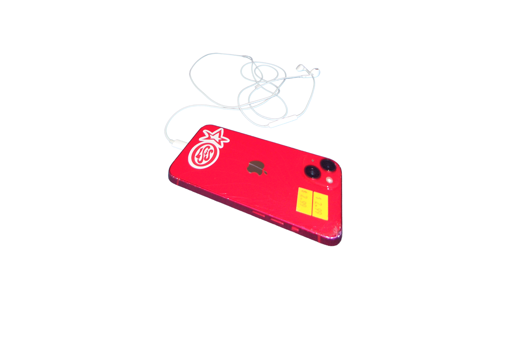
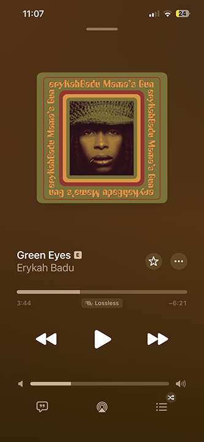
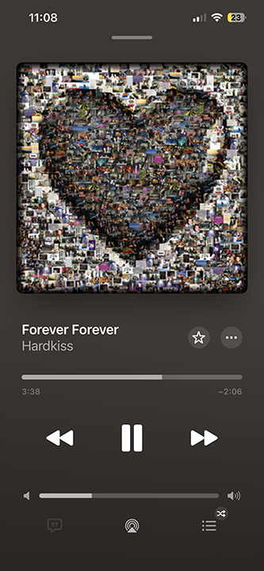
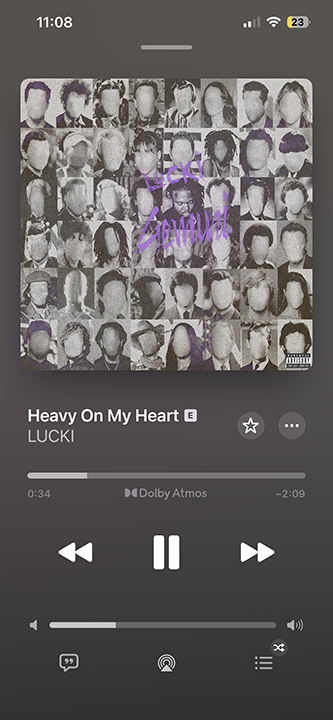
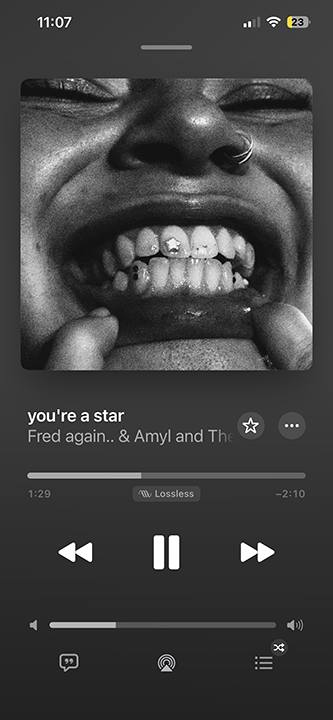
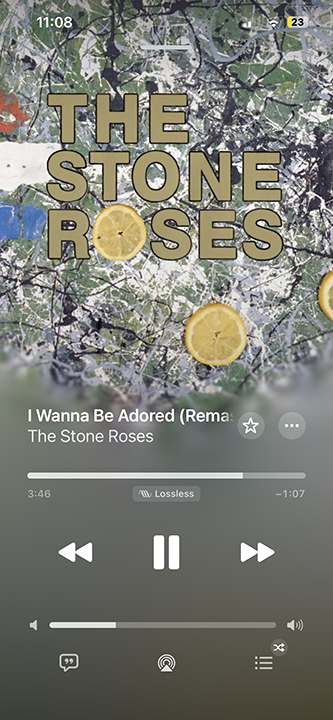

up and at'em! i have 9am classes five days a week so alarms are an essential part of my routine. if i don't wake up before 9am in general i feel like trash. my ideal day starts early.





music is an essential part of life! without a nice tune, i have to be alone with my thoughts. my taste is varied and ever-changing. music curation and creating are major sources of joy in my life.
snap a pic! everyday passes faster than the one before, so its necessary to capture memories as they happen.
finding my way! maps help me navigate the world and discover new places. whether i'm exploring my city or traveling afar, having a reliable map is crucial for my adventures.
scrolling through social media is a guilty pleasure! i enjoy keeping up with friends, trends, and the latest happenings online. it's a fun way to pass the time and stay connected.
i like to tell myself that solitaire is a "smart game," but its honestly just as stim as the rest of the apps.
so many colors and animations! block blast helps me to melt my brain after a perfect day of nourishing my mind, body, and soul. why go straight to bed when you can simultaneously lose sleep and smoothen your brain xD